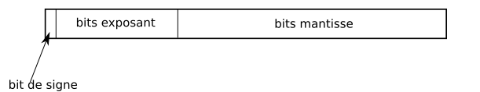

Représentation des entiers relatifs et des flottants
Nous avons vu précédemment comment écrire les nombres entiers naturels en binaire :
- \((101)_{2} = 1 \times 2^2 +0 \times 2^1 + 1\times 2^0 = 4 + 0 +1 = 5\)
- \((1111)_2 = 1 \times 2^3 + 1 \times 2^2+ 1 \times 2^1+ 1 \times 2^0 = 8 + 4 +2 +1 = 15\)
Nous avons vu aussi que les nombres entiers étaient codés au niveau machine sur un nombre d'octets bien défini :
- sur 1 octet, on code \(2^8 = 256\) nombres, soit les nombres de \(0\) à \(255\) ;
- sur 2 octets, on code \(2^{16} = 65~536\) nombres, soit les nombres de \(0\) à \(65~535\) (en C, c'est le type
int) ; - sur 4 octets, on code \(2^{32} \simeq 4,3 \times 10^9\) nombres (en C, c'est le type
long) ; - sur 8 octets, on code \(2^{64} \simeq 1,8 \times 10^{19}\) nombres (en C, c'est le type
long long).
Enfin nous avons constaté que les opérations arithmétiques basiques ( addition, soustraction, multiplication,...) étaient compatibles avec cette notation.
Il nous faut maintenant nous intéresser aux autres possibilités de nombres : les nombres signés (relatifs) et les nombres flottants(décimaux).
Les Entiers Relatifs (entiers signés)
Une version naïve
Bit de signe
Sur un octet, le bit de poids fort - c'est-à-dire le bit le plus à gauche du nombre, représente le signe (\(0\) pour positif et \(1\) pour négatif) et les \(7\) autres représentent la valeur absolue du nombre.
Exercice
- Quelle est la représentation de \(3\) dans ce système ?
- Quelle est la représentation de \(-4\) dans ce système ?
- Quel est le plus grand nombre représentable sur un octet ?
- Quel est le plus petit nombre représentable sur un octet ?
- Combien de nombres sont alors représentés ?
- Quel problème pouvez-vous déjà constater ?
- Effectuer l'addition binaire des nombres \(3\) et \(-4\). Le résultat est-il logique ?
A venir !
Complément à 2
Notation en complément à 2
Pour remédier aux problèmes soulevés par la version naïve, on utilisera la notation en complément à deux. Dans cette notation, sur un octet :
- Les nombres positifs sont représentés comme pour les nombres entiers naturels.
- Pour les nombres négatifs, par contre :
- On détermine l'écriture binaire de la valeur absolue du nombre, généralement sur un octet.
- On inverse les bits de l'écriture binaire , ce qu'on appelle le complément à 1 (cela correspond à une opération logique
NONsur chaque bit, donc \(1\) devient \(0\) et \(0\) devient \(1\)) ; - On ajoute \(1\) au résultat, les dépassements (
overflow, voir plus bas) étant ignorés - ce qui signifie qu'on reste bien sur le nombre de bits définis dans l'étape 1.
Exemple
- Le nombre \(13\) est représenté par \((00001101)_2\).
- Pour le nombre \(-4\) :
- on cherche d'abord la représentation de sa valeur absolue : \((0000 0100)_2\) ;
- ensuite on inverse chaque bit : \((1111 1011)_2\)
- puis on ajoute \(1\) au résultat : \((1111 1100)_2\)
Le nombre \(-4\) a pour représentation en complément à 2 sur un octet la suite
Pour les curieux : « Overflow »
Ce qu'on appelle un « OVERFLOW » consiste en un dépassement de capacité lors d'une opération. Par exemple pour des nombres entiers écrits en binaire sur 1 octet, il est parfois possible qu'une opération dépasse les possibilités de stockage sur 1 octet.
Prenons pour exemple l'opération \(130 + 132\) :
- en décimal, pas de soucis, \(130 + 132 = 262\) ;
-
- \(130 = 128 + 2 = 2^7 + 2^1 = (1000~0010)_2\)
- \(132 = 128 + 4 = 2^7 + 2^2 = (1000~0100)_2\)
- Lorsqu'on effectue la somme en binaire sur 1 octet, le résultat reste sur 1 octet, d'où :
en binaire sur 1 octet :
\[ \begin{array}{*{9}{c}} &1&0&0&0&0&0&1&0\\ +&1&0&0&0&0&1&0&0\\\hline &0&0&0&0&0&1&1&0\\ \end{array} \]Le résultat donné par une machine effectuant des additions sur 1 octet est donc \(130+132 = 5\)... Il y a eu « integer overflow », donc dépassement des capacités de la machine à traiter les nombres entiers.
Obtenir un « overflow » est une preuve de mauvaise prise en compte des capacités limites de la machine. C'est un bug redouté et redoutable, en particulier lorsqu'on utilise des structures de « Piles » (au programme de terminale) lors d'opération « récursives » (aussi au programme de terminale). On obtient alors une erreur qui est appelée « Stack Overflow ». Cette erreur est tellement fréquente et tellement célèbre qu'elle a donné son nom au plus grand forum dédié à la programmation, Stack Overflow.
Pour votre culture numérique, le plus célèbre des « integer overflow » a été un bug qui a coûté 500 millions de dollars lors du premier lancement de la fussée Ariane 5.
Exercice
- Compléter le tableau suivant (un calcul par élève) :
- Quel est le bit de poids fort sur chacun des nombres donnés ?
- Quel relation existe-t-il entre les nombres relatifs et leur entier naturel correspondant ?
- Quel est le plus grand nombre représentable sur un octet ?
- Quel est le plus petit nombre représentable sur un octet ?
- Combien de nombre sont alors représentés ?
- Effectuer l'addition binaire de \(-45\) et \(13\). Est-elle compatible avec l'opération décimale ?
A venir !
Complément à \(2\)
Le nombre entier relatif \(x\) négatif possède le même codage sur \(n\) bits que le nombre entier naturel \(2^n-|x|\).
Remarque
Un algorithme simple pour trouver un complément à 2 de tête est de garder tous les chiffres de la valeur absolue depuis le bit de poids faible jusqu'au premier \(1\), puis d'inverser tous les suivants. Par exemple :
- Pour obtenir le code de \(-40\) sur 1 octet :
- Le nombre \(40\) s'écrit \((0010~1000)_2\)
- On garde la partie à droite \((0010~\mathbf{1000})_2\)
- On inverse la partie à gauche après le premier \(1\) \((\mathbf{1101}1000)_2\)
- On a ainsi obtenu le codage du nombre \(-40\) sur 1 octet.
- Pour obtenir le code de \(-65\) sur 1 octet :
- Le nombre \(65\) s'écrit \((0100~0001)_2\)
- On garde uniquement le bit de poids faible \((0100~000\mathbf{1})_2\)
- On inverse tous les autres bits \((\mathbf{1011~111}1)_2\)
- On a ainsi obtenu le codage du nombre \(-65\) sur 1 octet.
Les Flottants
Représentation de la partie décimale d'un nombre en écriture binaire
Représentation de la partie décimale en base 10
En base 10, on a :
Partie « décimale » en écriture binaire
De la même manière qu'en écriture de base \(10\), on aura :
Convertir de la base 10 à la base 2
On cherche à convertir en binaire le nombre \(13,6875\). On commence par convertir la partie entière \(13 = (1101)_2\). Il faut ensuite convertir la partie décimale \(0,6875\). Pour y arriver on applique l'algorithme suivant :
- on multiplie \(0,6875\) par \(2\) : \(0,6875 \times 2 = 1,375\), et on note le résultat \(\mathbf{1} + 0,375\) ;
- on multiplie \(0,375\) par \(2\) : \(0,375 \times 2 = 0,75\), et on note le résultat \(\mathbf{0} + 0,75\) ;
- on multiplie \(0,75\) par \(2\) : \(0,75 \times 2 = 1,5\), et on note le résultat \(\mathbf{1} + 0,5\) ;
- on multiplie \(0,5\) par \(2\) : \(0,5 \times 2 = 1\), et on note le résultat \(\mathbf{1}\), la partie décimale étant nulle on arrête l'algorithme ;
On récupère les parties entières obtenues à chaque étape, soit \(\mathbf{1011}\), qui représente la partie décimale de notre nombre. D'où :
Exercice
- Trouver la représentation décimale de \((100,0011)_2\).
- Trouver la représentation binaire de \((6,625)_{10}\).
- Trouver la représentation binaire de \((0,1)_{10}\). Que remarque-t-on ?
A venir !
Remarque
Tout comme le nombre \(\dfrac{1}{3}\) ne possède pas d'écriture décimale finie, certains nombres ne possèdent pas d'écritures binaires finies.
Écriture scientifique des nombres en écriture binaires
Écriture décimale scientifique
Pour écrire de très grands nombres, ou de très petits, on utilise souvent une écriture scientifique, c'est-à-dire sous la forme \(a \times 10^n\), où \(a \in [1;10[\) et \(n\in\mathbb{Z}\). Ainsi :
- \(4~571,23 = 4,57123 \times 10^3\)
- \(0,003~45 = 3,45 \times 10^{-3}\)
Écriture scientifique en binaire
Pour écrire un nombre binaire en « écriture scientifique », on l'écrira sous la forme \(a \times 2^n\), où :
- \(a\) est un nombre binaire, avec partie « après la virgule » et dont la partie entière est \(1\) ;
- \(n\) est un nombre entier relatif, écrit en binaire.
Exemple
- Pour écrire le nombre \(11010\) en « écriture scientifique », il faudra décaler la virgule de \(4\) rangs sur la gauche, soit une puissance positive. Or \(4 = (100)_2\). Donc \(11010 = 1,1010\times 2^{100}\).
- Pour écrire le nombre \(0,001011\) en « écriture scientifique », il faudra décaler la virgule de \(3\) rangs sur la droite, soit une puissance négative, or \(3 = (11)_2\). Donc \(0,001011 = 1,011\times 2^{-11}\).
Représentation des flottants en machine
Le contenu de cette partie est largement issu de Pixees.fr.
Norme IEEE 754
La norme IEEE 754 est la norme la plus employée pour la représentation des nombres à virgule flottante dans le domaine informatique. La première version de cette norme date de 1985.
Nous allons étudier deux formats associés à cette norme : le format dit « simple précision » et le format dit « double précision ». Le format « simple précision » utilise \(32\) bits pour écrire un nombre flottant alors que le format « double » utilise \(64\) bits. Dans la suite nous travaillerons principalement sur le format \(32\) bits.
Que cela soit en simple précision ou en double précision, la norme IEEE 754 utilise :
- 1 bit de signe (1 si le nombre est négatif et 0 si le nombre est positif);
- des bits consacrés à l'exposant (8 bits pour la simple précision et 11 bits pour la double précision);
- des bits consacrés à la mantisse (23 bits pour la simple précision et 52 bits pour la double précision).

Nous pouvons vérifier que l'on a bien \(1 + 8 + 23 = 32\) bits pour la simple précision et \(1 + 11 + 52 = 64\) bits pour la double précision.
Déterminer la mantisse
Pour écrire un nombre au format IEEE 754, il est nécessaire de commencer par écrire notre nombre sous « écriture scientifique » binaire, sous la forme \(1,XXXXX.2^e\).
Ainsi on sait déjà que le nombre \(11010 = 1,1010\times 2^{100}\).
La partie « \(XXXXX\) » du nombre, c'est-à-dire \(1010\), correspond à la mantisse. Mais comme la mantisse doit contenir exactement \(23\) bits en simple précision, il faut donc la compléter avec \(23-4 = 19\) zéros à droite pour obtenir \(23\) bits, soit :
Exposant des nombres flottants
Notre première intuition serait de dire que la partie exposant correspond simplement au « e » de \(1,XXXXX.2^e\) (dans notre exemple \(1,1010\times 2^{100}\), nous aurions \(100\)). En fait, c'est un peu plus compliqué... En effet, comment représenter les exposants négatifs, sachant que dans la norme IEEE 754, aucun bit pour le signe de l'exposant n'a été prévu. Il a donc été nécessaire de choisir une méthode, et c'est celle du décalage d'exposant qui a été retenue :
- en simple précision, on décale l'exposant de \(127\) ;
- en double précision, on décale l'exposant de \(1~023\).
Déterminer l'exposant
Pour le format simple précision, \(8\) bits sont consacrés à l'exposant, il est donc possible de représenter \(256\) valeurs, nous allons pouvoir représenter des exposants compris entre \((-126)_{10}\) et \((+127)_{10}\) (les valeurs \(-127\) et \(+128\) sont des valeurs réservées, nous n'aborderons pas ce sujet ici, mais vous trouverez des précisions sur l'article IEEE 754 de wikipedia}). Pour avoir des valeurs uniquement positives, il va falloir procéder à un décalage : ajouter systématiquement \(127\) à la valeur de l'exposant.
Dans notre exemple, on a \(11010 = 1,1010\times 2^{100}\). L'exposant est donc \(4 =(100)_2\), et pour le représenter il faut donc le décaler : \(4 + 127 = 131\) soit \(131=(10000011)_2\). L'exposant possède 8 chiffres binaires, il n'est donc pas nécessaire de rajouter de zéros à gauche.\
Au format simple précision, le nombre \(11010\) s'écrit donc :
Exemple
Soit le nombre « \(-10,125\) » en base \(10\). Représentons-le au format simple précision :
- nous avons \((10)_{10} = (1010)_2\) et \((0,125)_{10} = (0,001)_2\) soit \((10,125)_{10} = (1010,001)_2\) ;
- décalons la virgule : \(1010,001\) = \(1,010001.2^3\), soit avec le décalage de l'exposant \(1,010001.2^{130}\), en écrivant l'exposant en base 2, nous obtenons \(1,010001.2^{10000010}\) ;
- nous avons donc : notre bit de signe = \(1\) (nombre négatif), nos 8 bits d'exposant = \(10000010\) et nos 23 bits de mantisse = \(01000100000000000000000\)
- soit en "collant" tous les "morceaux" :
Exercice
- Déterminez la représentation au format simple précision de \((0,25)_{10}\) en binaire.
- Déterminez la représentation au format simple précision de \((0,1)_{10}\) en binaire.
- Soit le nombre flottant au format simple précision : \(00111101110011001100110011001100\). Trouvez la représentation en base 10 de ce nombre.
- À l'aide de Thonny, tapez dans la console : \(0.1+0.2\). Faites de même dans la console Javascript de Firefox. Que constate-t-on ? Pourquoi ?
A venir !
œ